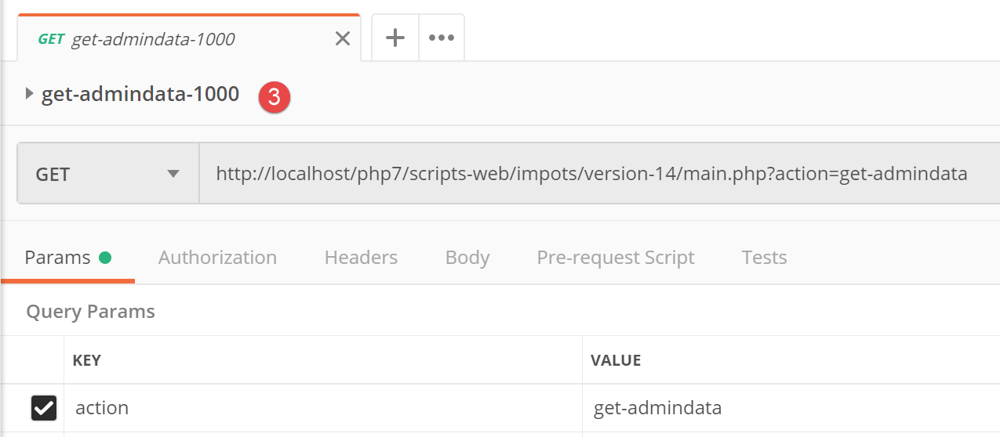
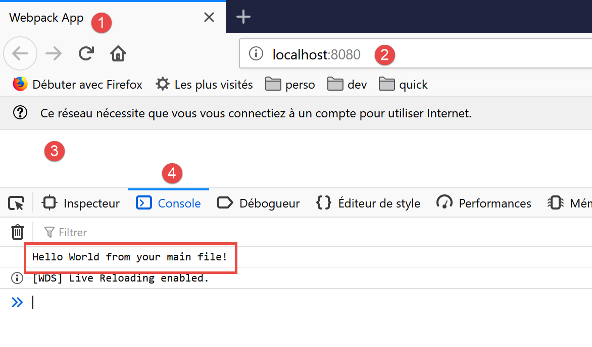

14. HTTP 客户端 税费计算服务的 JavaScript
14.1. Introduction
本文将编写第14版税费计算服务的客户端[node.js]。客户端/服务器架构如下：

我们将研究客户端的两个版本：
- 客户端第1版将采用以下分层结构：

- 客户端第2版将采用[main, métier, dao]结构。服务器的[métier]层将转移至客户端：

14.2. 客户端 HTTP 1

如前所述，客户端 HTTP 1 实现了以下客户端/服务器架构：

我们将实现：
- [dao] 层，以类形式实现；
- 将 [main] 层实现为使用该类的脚本；
14.2.1. [dao] 层
[dao] 层将由以下类 [Dao1.js] 实现：
'use strict';
// 导入
import qs from 'qs'
class Dao1 {
// 构造函数
constructor(axios) {
// 用于发送请求的 axios 库HTTP
this.axios = axios;
// 会话cookie
this.sessionCookieName = "PHPSESSID";
this.sessionCookie = '';
}
// 初始化会话
async initSession() {
// 请求选项 HHTP [get /main.php?action=init-session&type=json]
const options = {
method: "GET",
// URL的参数
params: {
action: 'init-session',
type: 'json'
}
};
// 执行查询 HTTP
return await this.getRemoteData(options);
}
async authentifierUtilisateur(user, password) {
// 请求选项 HHTP [post /main.php?action=authentifier-utilisateur]
const options = {
method: "POST",
headers: {
'Content-type': 'application/x-www-form-urlencoded',
},
// POST 的正文
data: qs.stringify({
user: user,
password: password
}),
// URL的参数
params: {
action: 'authentifier-utilisateur'
}
};
// HTTP 请求的执行
return await this.getRemoteData(options);
}
// 税款计算
async calculerImpot(marié, enfants, salaire) {
// 请求选项 HHTP [post /main.php?action=calculer-impot]
const options = {
method: "POST",
headers: {
'Content-type': 'application/x-www-form-urlencoded',
},
// POST 的正文 [marié, enfants, salaire]
data: qs.stringify({
marié: marié,
enfants: enfants,
salaire: salaire
}),
// URL 的参数
params: {
action: 'calculer-impot'
}
};
// 执行查询 HTTP
const data = await this.getRemoteData(options);
// 结果
return data;
}
// 模拟列表
async listeSimulations() {
// 查询选项 QZXW2HTMLCSEhUUAZQX[get /main.php?action=lister-simulations]
const options = {
method: "GET",
// URL 的参数
params: {
action: 'lister-simulations'
},
};
// 查询执行 HTTP
const data = await this.getRemoteData(options);
// 结果
return data;
}
// 模拟列表
async supprimerSimulation(index) {
// 查询选项 HHTP [get /main.php?action=supprimer-simulation&numéro=index]
const options = {
method: "GET",
// URL 的参数
params: {
action: 'supprimer-simulation',
numéro: index
},
};
// 执行查询 HTTP
const data = await this.getRemoteData(options);
// 结果
return data;
}
async getRemoteData(options) {
// 用于会话 Cookie
if (!options.headers) {
options.headers = {};
}
options.headers.Cookie = this.sessionCookie;
// 执行请求 HTTP
let response;
try {
// 异步请求
response = await this.axios.request('main.php', options);
} catch (error) {
// 参数 [error] 是一个异常实例——它可能有各种形式
if (error.response) {
// 服务器响应位于 [error.response]
response = error.response;
} else {
// 重新抛出该错误
throw error;
}
}
// response 包含服务器响应的全部内容 HTTP（HTTP 头部 + 响应正文）
// 若存在，则获取会话cookie
const setCookie = response.headers['set-cookie'];
if (setCookie) {
// setCookie 是一个数组
// 在此数组中查找会话cookie
let trouvé = false;
let i = 0;
while (!trouvé && i < setCookie.length) {
// 查找会话cookie
const results = RegExp('^(' + this.sessionCookieName + '.+?);').exec(setCookie[i]);
if (results) {
// 保存会话cookie
// eslint-disable-next-line require-atomic-updates
this.sessionCookie = results[1];
// 已找到
trouvé = true;
} else {
// 下一个元素
i++;
}
}
}
// 服务器响应位于 [response.data]
return response.data;
}
}
// 导出类
export default Dao1;
- 此处我们将运用“链接”一节中所学内容，该节介绍了 [axios] 库，该库支持在 [node.js] 环境及浏览器中执行 HTTP 请求。我们将重点关注“链接”一节中的脚本；
- 第9-15行：类的构造函数。该类将拥有三个属性：
- [axios]：用于执行 HTTP 请求的 [axios] 对象。该对象由调用方代码传递；
- [sessionCookieName]：根据服务器的不同，会话cookie的名称各异。此处为[PHPSESSID]；
- [sessionCookie]：由服务器发送并由客户端存储的会话cookie；
- 第53-76行：异步函数 [calculerImpot] 通过提交参数 [marié, enfants, salaire] 发起请求 [post /main.php?action=calculer-impot]。 该函数将服务器传输的字符串 jSON 转换为 JavaScript 对象；
- 第 79-92 行：异步函数 [listeSimulations] 发起请求 [$status, $état, [‘réponse’=>$response]]。 它将服务器传来的字符串 jSON 转换为 JavaScript 对象；
- 第 95-109 行：异步函数 [supprimerSimulation] 发起请求 [get /main.php?action=supprimer-simulation&numéro=index]。它将服务器返回的字符串 jSON 转换为 JavaScript 对象；
- 第 121 行：此处使用 [this.axios] 这种写法，因为传递给构造函数的 [axios] 对象已被存储在 [this.axios] 属性中；
- 第 161 行：导出类 [Dao1] 以便使用；
14.2.2. 脚本 [main1.js]
脚本 [main1.js] 使用类 [Dao1] 向服务器发起了一系列调用：
- 初始化 jSON 会话；
- 使用 [admin, admin] 进行身份验证；
- 请求三份税款计算；
- 请求模拟列表；
- 删除其中一项；
代码如下：
// 导入 axios
import axios from 'axios';
// 导入 Dao1 类
import Dao from './Dao1';
// 异步函数 [main]
async function main() {
// axios配置
axios.defaults.timeout = 2000;
axios.defaults.baseURL = 'http://localhost/php7/scripts-web/impots/version-14';
// [dao] 层实例化
const dao = new Dao(axios);
// 使用 [dao] 层
try {
// 初始化会话
log("-----------init-session");
let response = await dao.initSession();
log(response);
// 身份验证
log("-----------authentifier-utilisateur");
response = await dao.authentifierUtilisateur("admin", "admin");
log(response);
// 税款计算
log("-----------calculer-impot x 3");
response = await Promise.all([
dao.calculerImpot("oui", 2, 45000),
dao.calculerImpot("non", 2, 45000),
dao.calculerImpot("non", 1, 30000)
]);
log(response);
// 模拟列表
log("-----------liste-des-simulations");
response = await dao.listeSimulations();
log(response);
// 删除模拟
log("-----------suppression simulation n° 1");
response = await dao.supprimerSimulation(1);
log(response);
} catch (error) {
// 记录错误
console.log("erreur=", error.message);
}
}
// 日志jSON
function log(object) {
console.log(JSON.stringify(object, null, 2));
}
// 执行
main();
注释
- 第2行：导入库[axios]；
- 第 4 行：导入类 [Dao]；
- 第 7 行：与服务器交互的函数 [main] 为异步函数；
- 第9-10行：对将发送至服务器的HTTP请求进行默认配置：
- 第 9 行：[timeout] 的超时时间为 2 秒；
- 第10行：所有URL请求均以URL为前缀，该前缀是第14版税费计算服务器的基准前缀；
- 第12行：构建了[Dao]层。现在可以使用它了；
- 第46-48行：函数[log]用于将JavaScript对象的字符串jSON以美化形式显示：采用垂直排列，并使用两个空格进行缩进（第3个参数）；
- 第15-18行：初始化会话jSON；
- 第19-22行：身份验证；
- 第23-30行：并行请求三项税款计算。借助[await Promise.all]，在获得全部三项结果之前，程序执行将被阻塞；
- 第 31-34 行：模拟列表；
- 第35-38行：删除模拟；
- 第39-42行：处理可能出现的异常；
执行结果如下：
[Running] C:\myprograms\laragon-lite\bin\nodejs\node-v10\node.exe -r esm "c:\Data\st-2019\dev\es6\javascript\client impôts\client http 1\main1.js"
"-----------init-session"
{
"action": "init-session",
"état": 700,
"réponse": "session démarrée avec type [json]"
}
"-----------authentifier-utilisateur"
{
"action": "authentifier-utilisateur",
"état": 200,
"réponse": "Authentification réussie [admin, admin]"
}
"-----------calculer-impot x 3"
[
{
"action": "calculer-impot",
"état": 300,
"réponse": {
"marié": "oui",
"enfants": "2",
"salaire": "45000",
"impôt": 502,
"surcôte": 0,
"décôte": 857,
"réduction": 126,
"taux": 0.14
}
},
{
"action": "calculer-impot",
"état": 300,
"réponse": {
"marié": "non",
"enfants": "2",
"salaire": "45000",
"impôt": 3250,
"surcôte": 370,
"décôte": 0,
"réduction": 0,
"taux": 0.3
}
},
{
"action": "calculer-impot",
"état": 300,
"réponse": {
"marié": "non",
"enfants": "1",
"salaire": "30000",
"impôt": 1687,
"surcôte": 0,
"décôte": 0,
"réduction": 0,
"taux": 0.14
}
}
]
"-----------liste-des-simulations"
{
"action": "lister-simulations",
"état": 500,
"réponse": [
{
"marié": "oui",
"enfants": "2",
"salaire": "45000",
"impôt": 502,
"surcôte": 0,
"décôte": 857,
"réduction": 126,
"taux": 0.14,
"arrayOfAttributes": null
},
{
"marié": "non",
"enfants": "2",
"salaire": "45000",
"impôt": 3250,
"surcôte": 370,
"décôte": 0,
"réduction": 0,
"taux": 0.3,
"arrayOfAttributes": null
},
{
"marié": "non",
"enfants": "1",
"salaire": "30000",
"impôt": 1687,
"surcôte": 0,
"décôte": 0,
"réduction": 0,
"taux": 0.14,
"arrayOfAttributes": null
}
]
}
"-----------suppression simulation n° 1"
{
"action": "supprimer-simulation",
"état": 600,
"réponse": [
{
"marié": "oui",
"enfants": "2",
"salaire": "45000",
"impôt": 502,
"surcôte": 0,
"décôte": 857,
"réduction": 126,
"taux": 0.14,
"arrayOfAttributes": null
},
{
"marié": "non",
"enfants": "1",
"salaire": "30000",
"impôt": 1687,
"surcôte": 0,
"décôte": 0,
"réduction": 0,
"taux": 0.14,
"arrayOfAttributes": null
}
]
}
[Done] exited with code=0 in 0.516 seconds
14.3. 客户端 HTTP 2

客户端 HTTP2 的架构如下：

我们将 [métier] 层从服务器迁移到了 JavaScript 客户端。 与我们在课程 PHP7 中所做的情况不同，[main] 层在此无需通过 [métier] 层即可到达 [dao] 层。 我们将把这两个层作为能力中心：
- 当 [main] 层需要服务器上的数据时，会通过 [dao] 层；
- [main]层请求[métier]层进行税款计算；
- [métier]层独立于[dao]层，且从未调用该层；
14.3.1. JavaScript 类 [Métier]
[Métier] 类在 PHP 中的本质已在链接文章中描述。这是一个相当复杂的代码，在此重述并非为了解释，而是为了将其转换为 JavaScript：
<?php
// 命名空间
namespace Application;
class Metier implements InterfaceMetier {
// Dao 层
private $dao;
// 税务管理数据
private $taxAdminData;
//---------------------------------------------
// [dao] 层的设置器
public function setDao(InterfaceDao $dao) {
$this->dao = $dao;
return $this;
}
public function __construct(InterfaceDao $dao) {
// 在 [dao] 层中存储一个引用
$this->dao = $dao;
// 检索用于计算税款的数据
// 方法 [getTaxAdminData] 可能抛出异常 ExceptionImpots
// 随后将其回传至调用方
$this->taxAdminData = $this->dao->getTaxAdminData();
}
// 计算税额
// --------------------------------------------------------------------------
public function calculerImpot(string $marié, int $enfants, int $salaire): array {
// $marié：是，否
// $enfants：子女数量
// $salaire：年薪
// $this->taxAdminData：税务部门数据
//
// 验证是否已获取税务部门数据
if ($this->taxAdminData === NULL) {
$this->taxAdminData = $this->getTaxAdminData();
}
// 计算含子女的税额
$result1 = $this->calculerImpot2($marié, $enfants, $salaire);
$impot1 = $result1["impôt"];
// 计算不含子女的税额
if ($enfants != 0) {
$result2 = $this->calculerImpot2($marié, 0, $salaire);
$impot2 = $result2["impôt"];
// 应用家庭商数上限
$plafonDemiPart = $this->taxAdminData->getPlafondQfDemiPart();
if ($enfants < 3) {
// $PLAFOND_QF_DEMI_PART 欧元（前两名子女）
$impot2 = $impot2 - $enfants * $plafonDemiPart;
} else {
// 前两名子女为 $PLAFOND_QF_DEMI_PART 欧元，后续子女为该金额的两倍
$impot2 = $impot2 - 2 * $plafonDemiPart - ($enfants - 2) * 2 * $plafonDemiPart;
}
} else {
$impot2 = $impot1;
$result2 = $result1;
}
// 采用税率较高的税种
if ($impot1 > $impot2) {
$impot = $impot1;
$taux = $result1["taux"];
$surcôte = $result1["surcôte"];
} else {
$surcôte = $impot2 - $impot1 + $result2["surcôte"];
$impot = $impot2;
$taux = $result2["taux"];
}
// 计算可能的减免额
$décôte = $this->getDecôte($marié, $salaire, $impot);
$impot -= $décôte;
// 计算可能的减税额
$réduction = $this->getRéduction($marié, $salaire, $enfants, $impot);
$impot -= $réduction;
// 结果
return ["impôt" => floor($impot), "surcôte" => $surcôte, "décôte" => $décôte, "réduction" => $réduction, "taux" => $taux];
}
// --------------------------------------------------------------------------
private function calculerImpot2(string $marié, int $enfants, float $salaire): array {
// $marié：是，否
// $enfants：子女人数
// $salaire：年薪
// $this->taxAdminData：税务数据
//
// 份额数
$marié = strtolower($marié);
if ($marié === "oui") {
$nbParts = $enfants / 2 + 2;
} else {
$nbParts = $enfants / 2 + 1;
}
// 从第三个孩子起，每个孩子计1份
if ($enfants >= 3) {
// 第3个及以后的每个孩子额外增加半份
$nbParts += 0.5 * ($enfants - 2);
}
// 应税收入
$revenuImposable = $this->getRevenuImposable($salaire);
// 附加费
$surcôte = floor($revenuImposable - 0.9 * $salaire);
// 用于四舍五入问题
if ($surcôte < 0) {
$surcôte = 0;
}
// 家庭系数
$quotient = $revenuImposable / $nbParts;
// 税额计算
$limites = $this->taxAdminData->getLimites();
$coeffR = $this->taxAdminData->getCoeffR();
$coeffN = $this->taxAdminData->getCoeffN();
// 位于限值表末尾，用于终止后续循环
$limites[count($limites) - 1] = $quotient;
// 查找税率
$i = 0;
while ($quotient > $limites[$i]) {
$i++;
}
// 由于将 $quotient 放置在 $limites 表的末尾，因此前面的循环
// 不能超出表 $limites 的范围
// 现在可以计算税款
$impôt = floor($revenuImposable * $coeffR[$i] - $nbParts * $coeffN[$i]);
// 结果
return ["impôt" => $impôt, "surcôte" => $surcôte, "taux" => $coeffR[$i]];
}
// revenuImposable=年薪-免税额
// 免税额有最低和最高限额
private function getRevenuImposable(float $salaire): float {
// 工资的10%作为免税额
$abattement = 0.1 * $salaire;
// 该扣除额不得超过 $this->taxAdminData->getAbattementDixPourCentMax()
if ($abattement > $this->taxAdminData->getAbattementDixPourCentMax()) {
$abattement = $this->taxAdminData->getAbattementDixPourcentMax();
}
// 该减免额不得低于 $this->taxAdminData->getAbattementDixPourcentMin()
if ($abattement < $this->taxAdminData->getAbattementDixPourcentMin()) {
$abattement = $this->taxAdminData->getAbattementDixPourcentMin();
}
// 应税收入
$revenuImposable = $salaire - $abattement;
// 结果
return floor($revenuImposable);
}
// 计算可能的折价
private function getDecôte(string $marié, float $salaire, float $impots): float {
// 初始折让为零
$décôte = 0;
// 享受减免的最高税额
$plafondImpôtPourDécôte = $marié === "oui" ?
$this->taxAdminData->getPlafondImpotCouplePourDecote() :
$this->taxAdminData->getPlafondImpotCelibatairePourDecote();
if ($impots < $plafondImpôtPourDécôte) {
// 折扣上限
$plafondDécôte = $marié === "oui" ?
$this->taxAdminData->getPlafondDecoteCouple() :
$this->taxAdminData->getPlafondDecoteCelibataire();
// 理论折扣
$décôte = $plafondDécôte - 0.75 * $impots;
// 减免额不得超过应纳税额
if ($décôte > $impots) {
$décôte = $impots;
}
// 不适用<0的减免
if ($décôte < 0) {
$décôte = 0;
}
}
// 结果
return ceil($décôte);
}
// 计算可能的减免
private function getRéduction(string $marié, float $salaire, int $enfants, float $impots): float {
// 享受20%减免的收入上限
$plafondRevenuPourRéduction = $marié === "oui" ?
$this->taxAdminData->getPlafondRevenusCouplePourReduction() :
$this->taxAdminData->getPlafondRevenusCelibatairePourReduction();
$plafondRevenuPourRéduction += $enfants * $this->taxAdminData->getValeurReducDemiPart();
if ($enfants > 2) {
$plafondRevenuPourRéduction += ($enfants - 2) * $this->taxAdminData->getValeurReducDemiPart();
}
// 应税收入
$revenuImposable = $this->getRevenuImposable($salaire);
// 减免
$réduction = 0;
if ($revenuImposable < $plafondRevenuPourRéduction) {
// 20%的减免
$réduction = 0.2 * $impots;
}
// 结果
return ceil($réduction);
}
// 批处理模式下的税款计算
public function executeBatchImpots(string $taxPayersFileName, string $resultsFileName, string $errorsFileName): void {
// 允许上报来自 [dao] 层的异常
// 获取纳税人数据
$taxPayersData = $this->dao->getTaxPayersData($taxPayersFileName, $errorsFileName);
// 结果表
$results = [];
// 对结果进行处理
foreach ($taxPayersData as $taxPayerData) {
// 计算税款
$result = $this->calculerImpot(
$taxPayerData->getMarié(),
$taxPayerData->getEnfants(),
$taxPayerData->getSalaire());
// 完成[$taxPayerData]
$taxPayerData->setMontant($result["impôt"]);
$taxPayerData->setDécôte($result["décôte"]);
$taxPayerData->setSurCôte($result["surcôte"]);
$taxPayerData->setTaux($result["taux"]);
$taxPayerData->setRéduction($result["réduction"]);
// 将结果填入结果表
$results [] = $taxPayerData;
}
// 保存结果
$this->dao->saveResults($resultsFileName, $results);
}
}
- 第19-26行：类PHP的构造函数。由于我们之前提到要构建一个独立于[dao]层的[métier]层，因此我们将对该构造函数进行两处JavaScript修改：
- 它将不再接收 [dao] 层的实例（它不再需要该实例）；
- 它不会向 [dao] 层请求 [taxAdminData] 管理层的税务数据：由调用方代码将该数据传递给构造函数；
- 第 197-122 行：我们将不实现 [executeBatchImpots] 方法，该方法的最终目的是将模拟结果保存到文本文件中。 我们需要一段既能在 [node.js] 环境下运行，又能在浏览器中运行的代码。然而，无法将数据保存到运行客户端浏览器的机器的文件系统中；
鉴于这些限制，JavaScript 类 [Métier] 的代码如下：
'use strict';
// 业务类
class Métier {
// 构造函数
constructor(taxAdmindata) {
// this.taxAdminData：税务管理数据
this.taxAdminData = taxAdmindata;
}
// 税款计算
// --------------------------------------------------------------------------
calculerImpot(marié, enfants, salaire) {
// 已婚：是，否
// 子女：子女人数
// 工资：年薪
// this.taxAdminData：税务部门数据
//
// 含子女的税额计算
const result1 = this.calculerImpot2(marié, enfants, salaire);
const impot1 = result1["impôt"];
// 无子女的税款计算
let result2, impot2, plafondDemiPart;
if (enfants !== 0) {
result2 = this.calculerImpot2(marié, 0, salaire);
impot2 = result2["impôt"];
// 家庭系数上限的适用
plafondDemiPart = this.taxAdminData.plafondQfDemiPart;
if (enfants < 3) {
// PLAFOND_QF_DEMI_PART 欧元（前两名子女）
impot2 = impot2 - enfants * plafondDemiPart;
} else {
// PLAFOND_QF_DEMI_PART 欧元（前两名子女），后续子女金额加倍
impot2 = impot2 - 2 * plafondDemiPart - (enfants - 2) * 2 * plafondDemiPart;
}
} else {
// 不重新计算税款
impot2 = impot1;
result2 = result1;
}
// 取 [impot1, impot2] 中的最高税额
let impot, taux, surcôte;
if (impot1 > impot2) {
impot = impot1;
taux = result1["taux"];
surcôte = result1["surcôte"];
} else {
surcôte = impot2 - impot1 + result2["surcôte"];
impot = impot2;
taux = result2["taux"];
}
// 计算可能的减免
const décôte = this.getDecôte(marié, impot);
impot -= décôte;
// 计算可能的减税额
const réduction = this.getRéduction(marié, salaire, enfants, impot);
impot -= réduction;
// 结果
return {
"impôt": Math.floor(impot), "surcôte": surcôte, "décôte": décôte, "réduction": réduction,
"taux": taux
};
}
// --------------------------------------------------------------------------
calculerImpot2(marié, enfants, salaire) {
// 已婚：是，否
// 子女：子女人数
// 工资：年薪
// this->taxAdminData：税务部门数据
//
// 份额数
marié = marié.toLowerCase();
let nbParts;
if (marié === "oui") {
nbParts = enfants / 2 + 2;
} else {
nbParts = enfants / 2 + 1;
}
// 从第3个孩子起，每个孩子1份
if (enfants >= 3) {
// 第3个及以后的每个孩子额外增加半份
nbParts += 0.5 * (enfants - 2);
}
// 应税收入
const revenuImposable = this.getRevenuImposable(salaire);
// 附加费
let surcôte = Math.floor(revenuImposable - 0.9 * salaire);
// 用于处理四舍五入问题
if (surcôte < 0) {
surcôte = 0;
}
// 家庭分摊额
const quotient = revenuImposable / nbParts;
// 税额计算
const limites = this.taxAdminData.limites;
const coeffR = this.taxAdminData.coeffR;
const coeffN = this.taxAdminData.coeffN;
// 位于限值表末尾，用于终止后续循环
limites[limites.length - 1] = quotient;
// 查找税率
let i = 0;
while (quotient > limites[i]) {
i++;
}
// 由于将家庭收入商置于限值表末尾，因此前面的循环
// 不会超出限值数组范围
// 现在可以计算税额
const impôt = Math.floor(revenuImposable * coeffR[i] - nbParts * coeffN[i]);
// 结果
return { "impôt": impôt, "surcôte": surcôte, "taux": coeffR[i] };
}
// revenuImposable=年薪-免税额
// 免税额有最低和最高限额
getRevenuImposable(salaire) {
// 工资的10%作为免税额
let abattement = 0.1 * salaire;
// 该扣除额不得超过 taxAdminData.getAbattementDixPourCentMax()
if (abattement > this.taxAdminData.abattementDixPourCentMax) {
abattement = this.taxAdminData.abattementDixPourcentMax;
}
// 扣除额不得低于 taxAdminData.getAbattementDixPourcentMin()
if (abattement < this.taxAdminData.abattementDixPourcentMin) {
abattement = this.taxAdminData.abattementDixPourcentMin;
}
// 应税收入
const revenuImposable = salaire - abattement;
// 结果
return Math.floor(revenuImposable);
}
// 计算可能的折价
getDecôte(marié, impots) {
// 初始折让为零
let décôte = 0;
// 享受减免的最高税额
let plafondImpôtPourDécôte = marié === "oui" ?
this.taxAdminData.plafondImpotCouplePourDecote :
this.taxAdminData.plafondImpotCelibatairePourDecote;
let plafondDécôte;
if (impots < plafondImpôtPourDécôte) {
// 折扣上限
plafondDécôte = marié === "oui" ?
this.taxAdminData.plafondDecoteCouple :
this.taxAdminData.plafondDecoteCelibataire;
// 理论折扣
décôte = plafondDécôte - 0.75 * impots;
// 减免额不得超过应纳税额
if (décôte > impots) {
décôte = impots;
}
// 无折减 <0
if (décôte < 0) {
décôte = 0;
}
}
// 结果
return Math.ceil(décôte);
}
// 计算可能的减免
getRéduction(marié, salaire, enfants, impots) {
// 享受20%减免的收入上限
let plafondRevenuPourRéduction = marié === "oui" ?
this.taxAdminData.plafondRevenusCouplePourReduction :
this.taxAdminData.plafondRevenusCelibatairePourReduction;
plafondRevenuPourRéduction += enfants * this.taxAdminData.valeurReducDemiPart;
if (enfants > 2) {
plafondRevenuPourRéduction += (enfants - 2) * this.taxAdminData.valeurReducDemiPart;
}
// 应税收入
const revenuImposable = this.getRevenuImposable(salaire);
// 减免
let réduction = 0;
if (revenuImposable < plafondRevenuPourRéduction) {
// 20%的减免
réduction = 0.2 * impots;
}
// 结果
return Math.ceil(réduction);
}
}
// 导出类
export default Métier;
- 该 JavaScript 代码严格遵循 PHP 的代码；
- 导出类 [Métier]，第 187 行；
14.3.2. JavaScript类 [Dao2]

类 [Dao2] 以如下方式实现了上述 JavaScript 客户端的 [dao] 层：
'use strict';
// 导入
import qs from 'qs'
class Dao2 {
// 构造函数
constructor(axios) {
this.axios = axios;
// 会话cookie
this.sessionCookieName = "PHPSESSID";
this.sessionCookie = '';
}
// 初始化会话
async initSession() {
// 请求选项 HHTP [get /main.php?action=init-session&type=json]
const options = {
method: "GET",
// URL 的参数
params: {
action: 'init-session',
type: 'json'
}
};
// 执行查询 HTTP
return await this.getRemoteData(options);
}
async authentifierUtilisateur(user, password) {
// 请求选项 HHTP [post /main.php?action=authentifier-utilisateur]
const options = {
method: "POST",
headers: {
'Content-type': 'application/x-www-form-urlencoded',
},
// POST 的正文
data: qs.stringify({
user: user,
password: password
}),
// URL的参数
params: {
action: 'authentifier-utilisateur'
}
};
// HTTP 请求的执行
return await this.getRemoteData(options);
}
async getAdminData() {
// HHTP 查询选项[get /main.php?action=get-admindata]
const options = {
method: "GET",
// URL 的参数
params: {
action: 'get-admindata'
}
};
// 查询执行 HTTP
const data = await this.getRemoteData(options);
// 结果
return data;
}
async getRemoteData(options) {
// 用于会话cookie
if (!options.headers) {
options.headers = {};
}
options.headers.Cookie = this.sessionCookie;
// 执行请求 HTTP
let response;
try {
// 异步请求
response = await this.axios.request('main.php', options);
} catch (error) {
// 参数 [error] 是一个异常实例——它可能有各种形式
if (error.response) {
// 服务器响应位于 [error.response]
response = error.response;
} else {
// 重新抛出该错误
throw error;
}
}
// response 包含服务器响应的全部内容 HTTP（HTTP 头部 + 响应正文）
// 若存在，则获取会话cookie
const setCookie = response.headers['set-cookie'];
if (setCookie) {
// setCookie 是一个数组
// 在此数组中查找会话cookie
let trouvé = false;
let i = 0;
while (!trouvé && i < setCookie.length) {
// 查找会话cookie
const results = RegExp('^(' + this.sessionCookieName + '.+?);').exec(setCookie[i]);
if (results) {
// 存储会话cookie
// eslint-disable-next-line require-atomic-updates
this.sessionCookie = results[1];
// 已找到
trouvé = true;
} else {
// 下一个元素
i++;
}
}
}
// 服务器响应位于 [response.data]
return response.data;
}
}
// 导出类
export default Dao2;
注释
- 类 [Dao2] 仅实现了向税费计算服务器发送的三种可能请求：
- [init-session]（第 17-29 行）：用于初始化 jSON 会话；
- [authentifier-utilisateur]（第31-50行）：用于身份验证；
- [get-admindata]（第52-65行）：用于获取税务管理部门的数据，以便在客户端进行税款计算；
- 第52-65行：我们向服务器引入了一个新的操作[get-admindata]。该操作此前尚未实现，现予以实现。
14.3.3. 税款计算服务器的修改
税款计算服务器需实现一项新操作。我们将针对服务器第14版进行此项工作。待实现的操作具有以下特征：
- 由操作 [get /main.php?action=get-admindata] 调用；
- 该操作返回字符串 jSON，该字符串封装了税务管理数据；
接下来我们将回顾如何向服务器添加操作。
修改将在NetBeans中进行：

在 [2] 中，我们修改文件 [config.json] 以添加新操作：
{
"databaseFilename": "Config/database.json",
"corsAllowed": true,
"rootDirectory": "C:/myprograms/laragon-lite/www/php7/scripts-web/impots/version-14",
"relativeDependencies": [
"/Entities/BaseEntity.php",
"/Entities/Simulation.php",
"/Entities/Database.php",
"/Entities/TaxAdminData.php",
"/Entities/ExceptionImpots.php",
"/Utilities/Logger.php",
"/Utilities/SendAdminMail.php",
"/Model/InterfaceServerDao.php",
"/Model/ServerDao.php",
"/Model/ServerDaoWithSession.php",
"/Model/InterfaceServerMetier.php",
"/Model/ServerMetier.php",
"/Responses/InterfaceResponse.php",
"/Responses/ParentResponse.php",
"/Responses/JsonResponse.php",
"/Responses/XmlResponse.php",
"/Responses/HtmlResponse.php",
"/Controllers/InterfaceController.php",
"/Controllers/InitSessionController.php",
"/Controllers/ListerSimulationsController.php",
"/Controllers/AuthentifierUtilisateurController.php",
"/Controllers/CalculerImpotController.php",
"/Controllers/SupprimerSimulationController.php",
"/Controllers/FinSessionController.php",
"/Controllers/AfficherCalculImpotController.php",
"/Controllers/AdminDataController.php"
],
"absoluteDependencies": [
"C:/myprograms/laragon-lite/www/vendor/autoload.php",
"C:/myprograms/laragon-lite/www/vendor/predis/predis/autoload.php"
],
"users": [
{
"login": "admin",
"passwd": "admin"
}
],
"adminMail": {
"smtp-server": "localhost",
"smtp-port": "25",
"from": "guest@localhost",
"to": "guest@localhost",
"subject": "plantage du serveur de calcul d'impôts",
"tls": "FALSE",
"attachments": []
},
"logsFilename": "Logs/logs.txt",
"actions":
{
"init-session": "\\InitSessionController",
"authentifier-utilisateur": "\\AuthentifierUtilisateurController",
"calculer-impot": "\\CalculerImpotController",
"lister-simulations": "\\ListerSimulationsController",
"supprimer-simulation": "\\SupprimerSimulationController",
"fin-session": "\\FinSessionController",
"afficher-calcul-impot": "\\AfficherCalculImpotController",
"get-admindata": "\\AdminDataController"
},
"types": {
"json": "\\JsonResponse",
"html": "\\HtmlResponse",
"xml": "\\XmlResponse"
},
"vues": {
"vue-authentification.php": [700, 221, 400],
"vue-calcul-impot.php": [200, 300, 341, 350, 800],
"vue-liste-simulations.php": [500, 600]
},
"vue-erreurs": "vue-erreurs.php"
}
修改内容如下：
- 第 67 行：添加操作 [get-admindata] 并将其关联到一个控制器；
- 第 36 行：在应用程序 PHP 需加载的类列表中声明该控制器；
下一步是实现控制器 [AdminDataController] [3]：
<?php
namespace Application;
// Symfony 依赖项
use \Symfony\Component\HttpFoundation\Response;
use \Symfony\Component\HttpFoundation\Request;
use \Symfony\Component\HttpFoundation\Session\Session;
// [dao] 层的别名
use \Application\ServerDaoWithSession as ServerDaoWithRedis;
class AdminDataController implements InterfaceController {
// $config 是应用程序的配置
// 处理一个 Request 请求
// 使用会话 Session 并可对其进行修改
// $infos 是每个控制器特有的附加信息
// 返回一个数组 [$statusCode, $état, $content, $headers]
public function execute(
array $config,
Request $request,
Session $session,
array $infos = NULL): array {
// 必须仅有一个参数 GET
$method = strtolower($request->getMethod());
$erreur = $method !== "get" || $request->query->count() != 1;
if ($erreur) {
// 记录错误
$message = "il faut utiliser la méthode [get] avec l'unique paramètre [action] dans l'URL";
$état = 1001;
// 将结果返回给主控制器
return [Response::HTTP_BAD_REQUEST, $état, ["réponse" => $message], []];
}
// 可以运行
// Redis
\Predis\Autoloader::register();
try {
// 客户端 [predis]
$redis = new \Predis\Client();
// 连接服务器以检查其是否在线
$redis->connect();
} catch (\Predis\Connection\ConnectionException $ex) {
// 出错了
// 向主控制器返回带错误的结果
$état = 1050;
return [Response::HTTP_INTERNAL_SERVER_ERROR, $état,
["réponse" => "[redis], " . utf8_encode($ex->getMessage())], []];
}
// 从税务部门获取数据
// 首先在缓存中查找 [redis]
if (!$redis->get("taxAdminData")) {
try {
// 从数据库中检索税务数据
$dao = new ServerDaoWithRedis($config["databaseFilename"], NULL);
// taxAdminData
$taxAdminData = $dao->getTaxAdminData();
// 将检索到的数据存入 Redis
$redis->set("taxAdminData", $taxAdminData);
} catch (\RuntimeException $ex) {
// 操作失败
// 将带错误的结果返回给主控制器
$état = 1041;
return [Response::HTTP_INTERNAL_SERVER_ERROR, $état,
["réponse" => utf8_encode($ex->getMessage())], []];
}
} else {
// 税务数据从作用域为 [application] 的内存 [redis] 中获取
$arrayOfAttributes = \json_decode($redis->get("taxAdminData"), true);
// 根据前一个属性表实例化一个 [TaxAdminData] 对象
$taxAdminData = (new TaxAdminData())->setFromArrayOfAttributes($arrayOfAttributes);
}
// 将结果返回给主控制器
$état = 1000;
return [Response::HTTP_OK, $état, ["réponse" => $taxAdminData], []];
}
}
注释
- 第 12 行：与服务器上的其他控制器一样，[AdminDataController] 实现了由第 19-79 行中的 [execute] 方法构成的 [InterfaceController] 接口；
- 第78行：与服务器上的其他控制器一样，方法 [AdminDataController.execute] 返回一个数组 [$status, $état, [‘réponse’=>$response]]，其中：
- [$status]：响应的状态码HTTP；
- [$état]：应用程序内部代码，表示执行客户端请求后服务器的状态；
- [$response]：一个封装待发送给客户端响应的数组。此处，该数组随后将被转换为字符串 jSON；
- 第25-34行：验证客户端操作[get-admindata]的语法是否正确；
- 第37-74行：检索一个[TaxAdminData]对象，该对象可通过以下方式获取：
- 第 56-59 行：若未在缓存 [redis] 中找到，则从数据库中检索；
- 第 70-73 行：从缓存中检索 [redis]；
此代码沿用了链接文章中所述的控制器 [CalculerImpotController] 的代码。实际上，该控制器同样需要获取封装税务管理数据的对象 [TaxAdminData]。
在测试JavaScript客户端时，当在缓存[redis]中找到该对象时，[TaxAdminData]的变体jSON引发了问题。 为理解这一现象，让我们查看该对象在 [redis] 中以何种形式存储：


- 在 [5-7] 中，可以看到数值被以字符串的形式存储。PHP 能够处理这种情况，因为在数字与字符串的运算中，+ 运算符会隐式地将字符串的类型转换为数字。 但 JavaScript 则相反：在数字与字符串的运算中，+ 运算符会隐式地将数字类型转换为字符串类型。因此，JavaScript 类 [Métier] 中的计算结果出现了错误；
为解决此问题，我们将控制器第 71 行中使用的 [TaxAdminData.setFromArrayOfAttributes] 方法修改为实例化 [TaxAdminData] 对象 （参见文章）：
<?php
namespace Application;
class TaxAdminData extends BaseEntity {
// 税率区间
protected $limites;
protected $coeffR;
protected $coeffN;
// 税额计算常数
protected $plafondQfDemiPart;
protected $plafondRevenusCelibatairePourReduction;
protected $plafondRevenusCouplePourReduction;
protected $valeurReducDemiPart;
protected $plafondDecoteCelibataire;
protected $plafondDecoteCouple;
protected $plafondImpotCouplePourDecote;
protected $plafondImpotCelibatairePourDecote;
protected $abattementDixPourcentMax;
protected $abattementDixPourcentMin;
// 初始化
public function setFromJsonFile(string $taxAdminDataFilename) {
// 父级
parent::setFromJsonFile($taxAdminDataFilename);
// 检查属性值
$this->checkAttributes();
// 返回对象
return $this;
}
protected function check($value): \stdClass {
// $value 是一个字符串类型的数组或单个元素
if (!\is_array($value)) {
$tableau = [$value];
} else {
$tableau = $value;
}
// 将字符串数组转换为实数数组
$newTableau = [];
$result = new \stdClass();
// 数组中的元素必须是正数或零
$modèle = '/^\s*([+]?)\s*(\d+\.\d*|\.\d+|\d+)\s*$/';
for ($i = 0; $i < count($tableau); $i ++) {
if (preg_match($modèle, $tableau[$i])) {
// 将浮点数放入 newTableau
$newTableau[] = (float) $tableau[$i];
} else {
// 记录错误
$result->erreur = TRUE;
// 退出
return $result;
}
}
// 返回结果
$result->erreur = FALSE;
if (!\is_array($value)) {
// 单个值
$result->value = $newTableau[0];
} else {
// 返回值列表
$result->value = $newTableau;
}
return $result;
}
// 通过属性数组初始化
public function setFromArrayOfAttributes(array $arrayOfAttributes) {
// 父级
parent::setFromArrayOfAttributes($arrayOfAttributes);
// 验证属性值
$this->checkAttributes();
// 返回对象
return $this;
}
// 验证属性值
protected function checkAttributes() {
// 验证属性值是否为 >=0 的实数
foreach ($this as $key => $value) {
if (is_string($value)) {
// $value 必须是 >=0 的实数或 >=0 的实数数组
$result = $this->check($value);
// 错误？
if ($result->erreur) {
// 抛出异常
throw new ExceptionImpots("La valeur de l'attribut [$key] est invalide");
} else {
// 记录该值
$this->$key = $result->value;
}
}
}
// 返回对象
return $this;
}
// 获取器和设置器
...
}
注释
- 第 5 行：类 [TaxAdminData] 继承自类 [BaseEntity]，而该类已包含方法 [setFromArrayOfAttributes]。由于该方法不适用，我们在第 67-75 行对其进行了重定义；
- 第70行：首先使用父类的[setFromArrayOfAttributes]方法来初始化该类的属性；
- 第 72 行：方法 [checkAttributes] 验证关联的值是否确实为数字。如果是字符串，则将其转换为数字；
- 第 74 行：生成的 [$this] 对象此时是一个具有数值属性的对象；
- 第 78-93 行：方法 [checkAttributes] 验证对象属性的关联值是否确实为数值；
- 第 80 行：遍历属性列表；
- 第 81 行：如果某个属性的值类型为 [string]；
- 第 83 行：则验证该字符串是否为数字；
- 第 90 行：如果是，则将该字符串转换为数字并赋值给被测试的属性；
- 第85-86行：若非如此，则抛出异常；
- 第 32-65 行：函数 [check] 的实现略显冗余。它既处理数组，也处理单个值。 但在此处，调用该函数仅是为了验证一个 [string] 类型的值。它返回一个具有 [erreur, value] 属性的对象，其中：
- [erreur] 是一个布尔值，用于指示是否发生错误；
- [value] 是第 32 行中的参数 [value]，根据具体情况转换为数字或数字数组；
类 [BaseEntity] 原本可能包含一个名为 [arrayOfAttributes] 的属性，现已修改为不再包含该属性：因为该属性会污染字符串 jSON 中的 [TaxAdminData]。 该类重写如下：
<?php
namespace Application;
class BaseEntity {
// 从文件初始化JSON
public function setFromJsonFile(string $jsonFilename) {
// 从税务数据文件中提取内容
$fileContents = \file_get_contents($jsonFilename);
$erreur = FALSE;
// 错误？
if (!$fileContents) {
// 记录错误
$erreur = TRUE;
$message = "Le fichier des données [$jsonFilename] n'existe pas";
}
if (!$erreur) {
// 从配置文件中提取代码 JSON 并存入关联数组
$arrayOfAttributes = \json_decode($fileContents, true);
// 错误？
if ($arrayOfAttributes === FALSE) {
// 记录错误
$erreur = TRUE;
$message = "Le fichier de données JSON [$jsonFilename] n'a pu être exploité correctement";
}
}
// 错误？
if ($erreur) {
// 抛出异常
throw new ExceptionImpots($message);
}
// 初始化类属性
foreach ($arrayOfAttributes as $key => $value) {
$this->$key = $value;
}
// 检查所有属性是否存在
$this->checkForAllAttributes($arrayOfAttributes);
// 返回对象
return $this;
}
public function checkForAllAttributes($arrayOfAttributes) {
// 验证所有键是否已初始化
foreach (\array_keys($arrayOfAttributes) as $key) {
if (!isset($this->$key)) {
throw new ExceptionImpots("L'attribut [$key] de la classe "
. get_class($this) . " n'a pas été initialisé");
}
}
}
public function setFromArrayOfAttributes(array $arrayOfAttributes) {
// 初始化类中的某些属性（不一定是全部）
foreach ($arrayOfAttributes as $key => $value) {
$this->$key = $value;
}
// 返回对象
return $this;
}
// toString
public function __toString() {
// 对象的属性
$arrayOfAttributes = \get_object_vars($this);
// 对象的字符串 jSON
return \json_encode($arrayOfAttributes, JSON_UNESCAPED_UNICODE);
}
}
注释
- 第 20 行：属性 [$this→arrayOfAttributes] 已转换为变量，该变量现需传递给第 38 行的方法 [checkForAllAttributes]，该方法此前操作的是属性 [$this→arrayOfAttributes]；
由于 [BaseEntity] 的这一变更，[Database] 类也需稍作修改：
<?php
namespace Application;
class Database extends BaseEntity {
// 属性
protected $dsn;
protected $id;
protected $pwd;
protected $tableTranches;
protected $colLimites;
protected $colCoeffR;
protected $colCoeffN;
protected $tableConstantes;
protected $colPlafondQfDemiPart;
protected $colPlafondRevenusCelibatairePourReduction;
protected $colPlafondRevenusCouplePourReduction;
protected $colValeurReducDemiPart;
protected $colPlafondDecoteCelibataire;
protected $colPlafondDecoteCouple;
protected $colPlafondImpotCelibatairePourDecote;
protected $colPlafondImpotCouplePourDecote;
protected $colAbattementDixPourcentMax;
protected $colAbattementDixPourcentMin;
// 设置器
// 初始化
public function setFromJsonFile(string $jsonFilename) {
// 父对象
parent::setFromJsonFile($jsonFilename);
// 返回对象
return $this;
}
// 获取器和设置器
...
}
注释
- 在原始代码中，第 30 行之后曾调用 [parent::checkForAllAttributes] 方法。现在无需再执行此操作，因为该功能已由 [parent::setFromJsonFile($jsonFilename)] 方法自动处理；
14.3.4. 服务器端 [Postman] 测试
[Postman]已在链接文章中介绍。
我们使用以下 Postman 测试：



最后一个请求 jSON 的结果如下：

- 在 [5-8] 中，可以注意到字符串 jSON 的属性确实具有数值（而非字符串）。该结果将使 JavaScript 类 [Métier] 能够正常执行；
14.3.5. 主脚本 [main]

JavaScript客户端的主脚本[main]如下：
// 导入
import axios from 'axios';
// 导入
import Dao from './Dao2';
import Métier from './Métier';
// 异步函数[main]
async function main() {
// axios 配置
axios.defaults.timeout = 2000;
axios.defaults.baseURL = 'http://localhost/php7/scripts-web/impots/version-14';
// [dao] 层实例化
const dao = new Dao(axios);
// 请求 HTTP
let taxAdminData;
try {
// 初始化会话
log("-----------init-session");
let response = await dao.initSession();
log(response);
// 身份验证
log("-----------authentifier-utilisateur");
response = await dao.authentifierUtilisateur("admin", "admin");
log(response);
// 税务数据
log("-----------get-admindata");
response = await dao.getAdminData();
log(response);
taxAdminData = response.réponse;
} catch (error) {
// 记录错误
console.log("erreur=", error.message);
// 结束
return;
}
// [métier] 层实例化
const métier = new Métier(taxAdminData);
// 税款计算
log("-----------calculer-impot x 3");
const simulations = [];
simulations.push(métier.calculerImpot("oui", 2, 45000));
simulations.push(métier.calculerImpot("non", 2, 45000));
simulations.push(métier.calculerImpot("non", 1, 30000));
// 模拟列表
log("-----------liste-des-simulations");
log(simulations);
// 删除模拟
log("-----------suppression simulation n° 1");
simulations.splice(1, 1);
log(simulations);
}
// 日志jSON
function log(object) {
console.log(JSON.stringify(object, null, 2));
}
// 执行
main();
注释
- 第 5-6 行：导入类 [Dao] 和 [Métier]；
- 第 9 行：异步函数 [main]，该函数将通过类 [Dao] 组织与服务器的交互，并请求类 [Métier] 进行税款计算；
- 第10-36行：脚本以阻塞方式依次调用[dao]层的[initSession, authentifierUtilisateur, getAdminData]方法；
- 第 38 行：不再需要 [dao] 层。现在已具备所有必要元素，可让 JavaScript 客户端的 [métier] 层开始工作；
- 第41-46行：执行三项税额计算，并将结果汇总到[simulations]数组中；
- 第 49 行：显示模拟结果表；
- 第52行：删除其中一项；
主脚本的执行结果如下：
[Running] C:\myprograms\laragon-lite\bin\nodejs\node-v10\node.exe -r esm "c:\Data\st-2019\dev\es6\javascript\client impôts\client http 2\main2.js"
"-----------init-session"
{
"action": "init-session",
"état": 700,
"réponse": "session démarrée avec type [json]"
}
"-----------authentifier-utilisateur"
{
"action": "authentifier-utilisateur",
"état": 200,
"réponse": "Authentification réussie [admin, admin]"
}
"-----------get-admindata"
{
"action": "get-admindata",
"état": 1000,
"réponse": {
"limites": [
9964,
27519,
73779,
156244,
0
],
"coeffR": [
0,
0.14,
0.3,
0.41,
0.45
],
"coeffN": [
0,
1394.96,
5798,
13913.69,
20163.45
],
"plafondQfDemiPart": 1551,
"plafondRevenusCelibatairePourReduction": 21037,
"plafondRevenusCouplePourReduction": 42074,
"valeurReducDemiPart": 3797,
"plafondDecoteCelibataire": 1196,
"plafondDecoteCouple": 1970,
"plafondImpotCouplePourDecote": 2627,
"plafondImpotCelibatairePourDecote": 1595,
"abattementDixPourcentMax": 12502,
"abattementDixPourcentMin": 437
}
}
"-----------calculer-impot x 3"
"-----------liste-des-simulations"
[
{
"impôt": 502,
"surcôte": 0,
"décôte": 857,
"réduction": 126,
"taux": 0.14
},
{
"impôt": 3250,
"surcôte": 370,
"décôte": 0,
"réduction": 0,
"taux": 0.3
},
{
"impôt": 1687,
"surcôte": 0,
"décôte": 0,
"réduction": 0,
"taux": 0.14
}
]
"-----------suppression simulation n° 1"
[
{
"impôt": 502,
"surcôte": 0,
"décôte": 857,
"réduction": 126,
"taux": 0.14
},
{
"impôt": 1687,
"surcôte": 0,
"décôte": 0,
"réduction": 0,
"taux": 0.14
}
]
[Done] exited with code=0 in 0.583 seconds
14.4. 客户端 HTTP 3

在本节中，我们将应用程序 [Client HTTP 2] 部署到浏览器中，架构如下：

移植并非立竿见影。虽然 [node.js] 能够执行 JavaScript ES6，但浏览器通常无法直接处理。 因此需要使用工具，将 ES6 代码转换为现代浏览器可识别的 ES5 代码。幸运的是，这些工具既功能强大又相对简单易用。
本文参考了[How to write ES6 code that’s safe to run in the browser - Web Developer's Journal]这篇文章。
在 [client HTTP 3/src] 文件夹中，我们放置了刚刚开发的 [Client Http 2] 应用程序的 [main.js, Métier.js, Dao2.js] 组件。
14.4.1. 项目初始化
我们将在此文件夹 [client http 3] 中进行操作。在 [VSCode] 中打开终端，并切换至该文件夹：

我们使用命令 [npm init] 初始化该项目，并针对系统提出的问题接受默认选项：

- 在 [4-5] 中，项目配置文件 [package.json] 根据所给出的不同答案生成；
14.4.2. 安装项目依赖项
我们将安装以下依赖项：
- [@babel/core]：[Babel] [https://babeljs.io] 工具的核心，用于将 2015 年及以后的 ES 代码转换为可在新旧浏览器上运行的可执行代码；
- [@babel/preset-env]：属于 Babel 工具集。在 ES6 → ES5 的转译之前运行；
- [babel-loader]：此依赖项使工具 [webpack] 能够调用工具 [Babel]；
- [webpack]：总协调者。 [webpack] 调用 Babel 进行代码转译（ES6 → ES5），随后将其生成的所有文件合并为一个文件；
- [webpack-cli]：[webpack] 所必需的；
- [@webpack-cli/init]：用于配置 [webpack]；
- [webpack-dev-server]：提供一个默认运行在8080端口的开发Web服务器。当源文件发生更改时，会自动重新加载Web应用程序；
在 [VSCode] 的终端中，项目依赖项的安装方式如下：
npm --save-dev install @babel/core @babel/preset-env babel-loader webpack webpack-cli webpack-dev-server @webpack-cli/init

安装依赖项后，文件 [package.json] 已更新如下：
{
"name": "client-http-3",
"version": "1.0.0",
"description": "client jS du serveur de calcul de l'impôt",
"main": "index.js",
"scripts": {
"test": "echo \"Error: no test specified\" && exit 1"
},
"author": "serge.tahe@gmail.com",
"license": "ISC",
"devDependencies": {
"@babel/core": "^7.6.0",
"@babel/preset-env": "^7.6.0",
"@webpack-cli/init": "^0.2.2",
"babel-loader": "^8.0.6",
"cross-env": "^6.0.0",
"webpack": "^4.40.2",
"webpack-cli": "^3.3.9",
"webpack-dev-server": "^3.8.1"
}
}
- 第 12-19 行：项目的依赖项是 [devDependencies]：开发阶段需要这些依赖，但在生产环境中则不再需要。实际上，在生产环境中使用的是 [dist/main.js] 文件。 该文件采用 ES5 编码，因此不再需要将代码从 ES6 转换为 ES5 的工具；
我们需要向项目中添加两个依赖项：
- [core-js]：包含针对 ECMAScript 2019 版本的“polyfills”。 polyfill 允许在旧版浏览器上运行新版代码，例如 ECMAScript 2019（2019年9月）；
- [regenerator-runtime]：根据库官网信息 --> [Source transformer enabling ECMAScript 6 generator functions in JavaScript-of-today]；
从 Babel 7 开始，这两个依赖项取代了此前承担此功能的 [@babel/polyfill] 依赖项，后者现已（2019 年 9 月）被弃用。它们的安装方式如下：

文件 [package.json] 的演变如下：
{
"name": "client-http-3",
"version": "1.0.0",
"description": "My webpack project",
"main": "index.js",
"scripts": {
"test": "echo \"Error: no test specified\" && exit 1",
"build": "webpack",
"start": "webpack-dev-server"
},
"author": "serge.tahe@gmail.com",
"license": "ISC",
"devDependencies": {
"@babel/core": "^7.6.0",
"@babel/preset-env": "^7.6.0",
"@webpack-cli/init": "^0.2.2",
"babel-loader": "^8.0.6",
"babel-plugin-syntax-dynamic-import": "^6.18.0",
"html-webpack-plugin": "^3.2.0",
"webpack": "^4.40.2",
"webpack-cli": "^3.3.9",
"webpack-dev-server": "^3.8.1"
},
"dependencies": {
"core-js": "^3.2.1",
"regenerator-runtime": "^0.13.3"
}
}
使用 [core-js, regenerator-runtime] 依赖项时，必须将以下 [imports]（第 3-4 行）放入主脚本 [src/main.js] 中：
// 导入
import axios from 'axios';
import "core-js/stable";
import "regenerator-runtime/runtime";
// 导入
import Dao from './Dao2';
import Métier from './Métier';
14.4.3. [webpack]的配置
[webpack] 是负责驱动以下操作的工具：
- 将项目中所有 JavaScript 文件从 ES6 转换为 ES5；
- 将生成的文件合并为单个文件；
该工具由配置文件 [webpack.config.js] 控制，该文件可通过名为 [@webpack-cli/init] 的依赖项生成（2019年9月）。该依赖项已随“链接”部分中的其他依赖项一同安装。
我们在终端中执行命令 [npx webpack-cli init]：

回答完各项问题（其中大部分默认答案均可接受）后，项目根目录下将生成文件 [webpack.config.js]：
[webpack.config.js] 文件内容如下：
/* eslint-disable */
const path = require('path');
const webpack = require('webpack');
/*
* SplitChunksPlugin is enabled by default and replaced
* deprecated CommonsChunkPlugin. It automatically identifies modules which
* should be splitted of chunk by heuristics using module duplication count and
* module category (i. e. node_modules). And splits the chunks…
*
* It is safe to remove "splitChunks" from the generated configuration
* and was added as an educational example.
*
* https://webpack.js.org/plugins/split-chunks-plugin/
*
*/
const HtmlWebpackPlugin = require('html-webpack-plugin');
/*
* We've enabled HtmlWebpackPlugin for you! This generates a html
* page for you when you compile webpack, which will make you start
* developing and prototyping faster.
*
* https://github.com/jantimon/html-webpack-plugin
*
*/
module.exports = {
mode: 'development',
entry: './src/index.js',
output: {
filename: '[name].[chunkhash].js',
path: path.resolve(__dirname, 'dist')
},
plugins: [new webpack.ProgressPlugin(), new HtmlWebpackPlugin()],
module: {
rules: [
{
test: /.(js|jsx)$/,
include: [path.resolve(__dirname, 'src')],
loader: 'babel-loader',
options: {
plugins: ['syntax-dynamic-import'],
presets: [
[
'@babel/preset-env',
{
modules: false
}
]
]
}
}
]
},
optimization: {
splitChunks: {
cacheGroups: {
vendors: {
priority: -10,
test: /[\\/]node_modules[\\/]/
}
},
chunks: 'async',
minChunks: 1,
minSize: 30000,
name: true
}
},
devServer: {
open: true
}
};
虽然我不完全理解该文件的所有细节，但可以注意到以下几点：
- 第 1 行：该文件不包含 ES6 的代码。因此，[Eslint] 报告的错误会追溯到项目根目录下的 [javascript]。这很麻烦。 若要阻止 Eslint 分析某个文件，只需将第 1 行注释掉即可；
- 第 31 行：当前工作模式为 [développement]；
- 第32行：此处的输入脚本为[src/index.js]。我们后续需要修改这一点；
- 第36行：[webpack]生成的文件将保存在[dist]文件夹中；
- 第46行：可以看到[webpack]依赖于[babel-loader]，这是我们已安装的依赖项之一；
- 第 54 行：可以看到 [webpack] 使用了 [@babel-preset/env]，这是我们已安装的依赖项之一；
[webpack] 的初始化修改了文件 [package.json]（它正在请求权限）：
{
"name": "client-http-3",
"version": "1.0.0",
"description": "My webpack project",
"main": "index.js",
"scripts": {
"test": "echo \"Error: no test specified\" && exit 1",
"build": "webpack",
"start": "webpack-dev-server"
},
"author": "serge.tahe@gmail.com",
"license": "ISC",
"devDependencies": {
"@babel/core": "^7.6.0",
"@babel/preset-env": "^7.6.0",
"@webpack-cli/init": "^0.2.2",
"babel-loader": "^8.0.6",
"babel-plugin-syntax-dynamic-import": "^6.18.0",
"html-webpack-plugin": "^3.2.0",
"webpack": "^4.40.2",
"webpack-cli": "^3.3.9",
"webpack-dev-server": "^3.8.1"
},
"dependencies": {
"core-js": "^3.2.1",
"regenerator-runtime": "^0.13.3"
}
}
- 第 4 行：已被修改；
- 第8-9行、第18-19行：这些行是后来添加的；
- 第8行：任务[npm]，用于编译该项目；
- 第 9 行：任务 [npm]，用于执行该项目；
- 第18行：？
- 第19行：用于生成文件[dist/index.html]，该文件会自动嵌入由[webpack]生成的脚本[dist/main.js]，而项目运行时调用的正是该脚本；
最后，[webpack]的配置生成了一个名为[src/index.js]的文件：

[index.js] 的内容如下（2019年9月）：
console.log("Hello World from your main file!");
14.4.4. 项目的编译与运行
文件 [package.json] 包含三个任务 [npm]：
"scripts": {
"test": "echo \"Error: no test specified\" && exit 1",
"build": "webpack",
"start": "webpack-dev-server"
},
这些任务由 [VSCode] 包含，并提交执行：

- 在 [1-3] 中，对项目进行编译；
- 在 [4] 中：项目已在 [dist/main.hash.js] 中编译完成，并生成页面 [dist/index.html]；
生成的页面 [index.html] 如下：
<!DOCTYPE html>
<html>
<head>
<meta charset="UTF-8">
<title>Webpack App</title>
</head>
<body>
<script type="text/javascript" src="main.87afc226fd6d648e7dea.js"></script></body>
</html>
因此，该页面仅封装了由 [webpack] 生成的文件 [main.hash.js]。
该项目由任务 [start] 执行：

随后，页面 [dist/index.html] 会被加载到一个服务器上，该服务器属于 [webpack] 系列，运行在本地机器的 8080 端口，并通过机器的默认浏览器显示：

- 在 [2] 中，[webpack] 的 Web 服务器服务端口；
- 变为 [3]，页面 [dist/index.html] 的主体内容为空；
- 在 [4] 中，浏览器开发工具（此处为 Firefox）的 [console] 选项卡（F12）；
- 在 [5] 中，是文件 [src/index.js] 执行后的结果。需要说明的是，该文件的内容如下：
现在，我们将该内容更改为以下内容：
系统会自动（无需重新编译）生成新的 [main.js, index.html] 文件，并将新文件 [index.html] 加载到浏览器中：

无需在任务 [start] 之前执行任务 [build]：后者会先编译该项目。它不会将此次编译的产物存储在文件夹 [dist] 中。 要验证这一点，只需删除该文件夹即可。此时会发现，任务 [start] 会编译并执行该项目，而不会创建文件夹 [dist]。 它似乎将[index.html, main.hash.js]的输出结果存储在[webpackdev-server]专属的文件夹中。这种行为对于我们的测试而言已足够。
当开发服务器启动时，项目中任何文件的保存操作都会触发重新编译。因此，我们将[VSCode]的[Auto Save]模式设为禁用。因为我们不希望在项目文件中输入字符时立即触发重新编译。 我们仅希望在保存修改时才进行重新编译：

- 在 [2] 中，选项 [Auto Save] 不得被勾选；
14.4.5. 税费计算服务器的JavaScript客户端测试
要测试税费计算服务器的 JavaScript 客户端，需在文件 [webpack.config.js] [2-3] 中将 [main.js] [1] 指定为项目的入口点：

请注意，与 [Client http 2] 中的版本相比，脚本 [main.js] 还需额外包含两项导入：

此外，我们还对代码进行了微调，以处理服务器可能返回的错误：
// imports
import axios from 'axios';
import "core-js/stable";
import "regenerator-runtime/runtime";
// 导入
import Dao from './Dao2';
import Métier from './Métier';
// 异步函数 [main]
async function main() {
// axios 配置
axios.defaults.timeout = 2000;
axios.defaults.baseURL = 'http://localhost/php7/scripts-web/impots/version-14';
// [dao] 层实例化
const dao = new Dao(axios);
// 请求 HTTP
let taxAdminData;
try {
// 初始化会话
log("-----------init-session");
let response = await dao.initSession();
log(response);
if (response.état != 700) {
throw new Error(JSON.stringify(response.réponse));
}
// 身份验证
log("-----------authentifier-utilisateur");
response = await dao.authentifierUtilisateur("admin", "admin");
log(response);
if (response.état != 200) {
throw new Error(JSON.stringify(response.réponse));
}
// 税务数据
log("-----------get-admindata");
response = await dao.getAdminData();
log(response);
if (response.état != 1000) {
throw new Error(JSON.stringify(response.réponse));
}
taxAdminData = response.réponse;
} catch (error) {
// 记录错误
console.log("erreur=", error.message);
// 结束
return;
}
// QZXW2HTML 层实例化BW23DqXRpZXJdZQX
const métier = new Métier(taxAdminData);
// 税额计算
log("-----------calculer-impot x 3");
const simulations = [];
simulations.push(métier.calculerImpot("oui", 2, 45000));
simulations.push(métier.calculerImpot("non", 2, 45000));
simulations.push(métier.calculerImpot("non", 1, 30000));
// 模拟列表
log("-----------liste-des-simulations");
log(simulations);
// 删除模拟
log("-----------suppression simulation n° 1");
simulations.splice(1, 1);
log(simulations);
}
// 日志jSON
function log(object) {
console.log(JSON.stringify(object, null, 2));
}
// 执行
main();
注释
- 在 [24-26]、[31-33]、[38-40] 这几行中，我们对服务器在 jSON 响应中发送的 [response.état] 代码进行了验证。 如果该代码表示存在错误，则会抛出一个异常，其错误消息为服务器响应 [response.réponse] 中的字符串 jSON；
完成上述操作后，我们执行项目 [5-6]。
随后生成页面 [index.html] 并加载到浏览器中：

- 在 [7] 中，可以看到由于 [CORS] 问题（跨源资源共享），操作 [init-session] 未能完成；
问题 CORS 源于客户端与服务器的通信：
- 我们的 JavaScript 客户端已下载到 [http://localhost:8080] 机器上；
- 税费计算服务器运行在 [http://localhost:80] 机器上；
- 因此客户端和服务器不在同一域内（虽然在同一台机器上，但端口不同）；
- 运行从 [http://localhost:8080] 机器加载的 JavaScript 客户端的浏览器会阻止所有目标不是 [http://localhost:80] 的请求。这是一项安全措施。 因此，它会阻止客户端发往运行在 [http://localhost:80] 机器上的服务器的请求；
实际上，浏览器并未完全阻止该请求。它实际上是在等待服务器“告知”其接受跨域请求。如果获得此授权，浏览器将转发该跨域请求。
服务器通过发送特定的 HTTP 头部来给予授权：
- 第 1 行：JavaScript 客户端在 [http://localhost:8080] 域上运行。服务器必须明确响应接受该域；
- 第2行：JavaScript客户端将在其请求中使用HTTP和[Accept, Content-Type]头部：
- [Accept]：该标头在所有请求中都会发送；
- [Content-Type]：该标头用于 POST 操作中，以指示 POST 参数的类型；
服务器必须明确接受这两个 HTTP 头部；
- 第 3 行：JavaScript 客户端将使用 GET 和 POST 请求。服务器必须明确接受这两种类型的请求；
- 第4行：JavaScript客户端将发送会话cookie。服务器通过第4行的头部接受这些cookie；
因此我们需要修改服务器。我们将在 [Netbeans] 中进行此操作。CORS 的问题仅在开发模式下出现。 在生产环境中，客户端和服务器将在同一域 [http://localhost:80] 内工作，因此不会出现 CORS 问题。因此，我们需要通过服务器配置来决定是否允许 CORS 请求。

服务器配置的修改涉及三个位置：
- [1, 4]：在配置文件[config.json]中添加一个布尔值，用于控制是否接受跨域请求；
- [2]：在向 JavaScript 客户端发送响应的类 [ParentResponse] 中。该类将发送客户端浏览器所期望的 CORS 请求头；
- [3]：位于 [HtmlResponse, JsonResponse, XmlResponse] 类中，该类分别针对 [html, json, xml] 会话生成响应。 这些类必须将其在 [4] 中找到的布尔值 [corsAllowed] 传递给其父类 [2]。 此操作在 [5] 中完成，通过传递来自 jSON 和 [2] 文件的图像数组；
[ParentResponse] 和 [2] 类的演变如下：
<?php
namespace Application;
// Symfony 依赖项
use Symfony\Component\HttpFoundation\Response;
use Symfony\Component\HttpFoundation\Request;
class ParentResponse {
// int $statusCode：响应状态码 HTTP
// 字符串 $content：待发送的响应正文
// 根据具体情况，可能是字符串 JSON、XML 或 HTML
// 数组 $headers：需添加到响应中的标头 HTTP
public function sendResponse(
Request $request,
int $statusCode,
string $content,
array $headers,
array $config): void {
// 准备服务器的文本响应
$response = new Response();
$response->setCharset("utf-8");
// 状态码
$response->setStatusCode($statusCode);
// 跨域请求的头部
if ($config['corsAllowed']) {
$origin = $request->headers->get("origin");
if (strpos($origin, "http://localhost") === 0) {
$headers = array_merge($headers,
["Access-Control-Allow-Origin" => $origin,
"Access-Control-Allow-Headers" => "Accept, Content-Type",
"Access-Control-Allow-Methods" => "GET, POST",
"Access-Control-Allow-Credentials" => "true"
]);
}
}
foreach ($headers as $text => $value) {
$response->headers->set($text, $value);
}
// 方法 [OPTIONS] 的特例
// 在此情况下仅头部信息重要
$method = strtolower($request->getMethod());
if ($method === "options") {
$content = "";
$response->setStatusCode(Response::HTTP_OK);
}
// 发送响应
$response->setContent($content);
$response->send();
}
}
- 第 29 行：检查是否需要处理跨域请求。如果需要，则会生成 HTTP CORS 头部（第 33-37 行），即使当前请求并非跨域请求。 在后一种情况下，CORS 头部将无用，且不会被客户端使用；
- 第 30 行：在跨域请求中，向服务器发送请求的客户端浏览器会发送 HTTP [Origin: http://localhost:8080] 头部（以我们的 JavaScript 客户端为例）。 第30行，我们在请求[$request]中获取了该HTTP标头；
- 第31行：仅接受来自[http://localhost]主机的跨域请求。需注意，此类请求仅在项目开发模式下发生；
- 第 32-36 行：将 CORS 头部添加到 [$headers] 数组中已有的头部中；
- 第45-49行：客户端浏览器请求CORS权限的方式可能因所运行的客户端而异。有时，客户端浏览器会使用HTTP [OPTIONS]命令来请求这些权限。 这对我们的服务器来说是一个新情况，因为该服务器最初仅设计用于处理 [GET, POST] 命令。 对于 [OPTIONS] 命令，服务器目前会生成错误响应。在第 46-49 行，我们进行了最后时刻的修正：如果第 46 行检测到当前命令是 [OPTIONS]，则为客户端生成：
- 第47、51行：生成一个空的[$content]响应；
- 第48行：返回状态码200，表示请求成功。对于此请求，唯一重要的是发送第33-36行中的CORS请求头。这是客户端浏览器所期望的；
对服务器进行上述修正后，JavaScript客户端运行更顺畅，但出现了新的错误：

- 在 [1] 中，jSON 会话已正确初始化；
- 在 [2] 时，操作 [authentifier-utilisateur] 失败：服务器提示当前没有会话。 这意味着 JavaScript 客户端未正确回传其在操作 [init-session] 时发送的会话 Cookie；
让我们来分析一下发生的网络通信：

- 在 [4] 中，请求 [init-session]。该请求执行正常，响应状态码为 200；
- 在 [5] 中，请求为 [authentifier-utilisateur]。该请求失败，响应状态码为 400（Bad Request）[6]；
若检查请求 [5] 的头部信息 HTTP [7]， 可以发现，JavaScript客户端未发送HTTP和[Cookie]这两个头部，而正是这些头部本应使其能够回传服务器最初发送的会话cookie。这就是服务器声明不存在会话的原因。
为了让客户端发送会话cookie，需要在 [axios] 对象中添加以下配置：
// 导入
import axios from 'axios';
import "core-js/stable";
import "regenerator-runtime/runtime";
// 导入
import Dao from './Dao2';
import Métier from './Métier';
// 异步函数[main]
async function main() {
// axios 配置
axios.defaults.timeout = 2000;
axios.defaults.baseURL = 'http://localhost/php7/scripts-web/impots/version-14';
axios.defaults.withCredentials = true;
// [dao] 层实例化
const dao = new Dao(axios);
// 请求 HTTP
let taxAdminData;
...
第 15 行要求将 Cookie 包含在请求 [axios] 的 HTTP 请求头中。请注意，在 [node.js] 环境中并不需要这样做。 因此，这两个环境之间的代码存在差异。
修复此错误后，JavaScript客户端即可正常运行：


14.5. HTTP 3 客户端的改进
当上述类 [Dao2] 在浏览器中运行时，无需管理会话 Cookie。实际上，托管 [dao] 层的浏览器会负责管理会话 Cookie：它会自动返回服务器发送的任何 Cookie。 因此，类 [Dao2] 可以重写为以下类 [Dao3]：
"use strict";
// 导入
import qs from "qs";
class Dao3 {
// 构造函数
constructor(axios) {
this.axios = axios;
}
// 初始化会话
async initSession() {
// 请求选项 HHTP [get /main.php?action=init-session&type=json]
const options = {
method: "GET",
// URL的参数
params: {
action: "init-session",
type: "json"
}
};
// 执行查询 HTTP
return await this.getRemoteData(options);
}
async authentifierUtilisateur(user, password) {
// 查询选项 HHTP [post /main.php?action=authentifier-utilisateur]
const options = {
method: "POST",
headers: {
"Content-type": "application/x-www-form-urlencoded"
},
// 正文 POST
data: qs.stringify({
user: user,
password: password
}),
// URL的参数
params: {
action: "authentifier-utilisateur"
}
};
// 查询执行 HTTP
return await this.getRemoteData(options);
}
async getAdminData() {
// HHTP 查询选项 [get /main.php?action=get-admindata]
const options = {
method: "GET",
// URL 的参数
params: {
action: "get-admindata"
}
};
// 执行请求 HTTP
const data = await this.getRemoteData(options);
// 结果
return data;
}
async getRemoteData(options) {
// 查询执行 HTTP
let response;
try {
// 异步请求
response = await this.axios.request("main.php", options);
} catch (error) {
// 参数 [error] 是一个异常实例——它可能有各种形式
if (error.response) {
// 服务器响应位于 [error.response]
response = error.response;
} else {
// 重新抛出该错误
throw error;
}
}
// response 包含服务器响应的全部内容 HTTP（HTTP 头部 + 响应正文）
// 服务器的响应位于 [response.data] 中
return response.data;
}
}
// 导出类
export default Dao3;
所有与管理 Cookie 相关的代码均已移除。
我们将前一个项目修改如下：

在 [src] 文件夹中，我们添加了两个文件：
- 前面介绍过的类文件 [Dao3]；
- 负责启动新版本的文件 [main3]；
文件 [main3] 与上一版本的 [main] 保持一致，但现在它使用类 [Dao3]：
// 导入
import axios from "axios";
import "core-js/stable";
import "regenerator-runtime/runtime";
// 导入
import Dao from "./Dao3";
import Métier from "./Métier";
// 异步函数 [main]
async function main() {
// axios 配置
axios.defaults.timeout = 2000;
axios.defaults.baseURL =
"http://localhost/php7/scripts-web/impots/version-14";
axios.defaults.withCredentials = true;
// [dao] 层实例化
const dao = new Dao(axios);
// 请求 HTTP
...
}
// 日志 jSON
function log(object) {
console.log(JSON.stringify(object, null, 2));
}
// 执行
main();
文件 [webpack.config] 已修改，现用于执行脚本 [main3]：
/* eslint-disable */
const path = require("path");
const webpack = require("webpack");
/*
* SplitChunksPlugin is enabled by default and replaced
* deprecated CommonsChunkPlugin. It automatically identifies modules which
* should be splitted of chunk by heuristics using module duplication count and
* module category (i. e. node_modules). And splits the chunks…
*
* It is safe to remove "splitChunks" from the generated configuration
* and was added as an educational example.
*
* https://webpack.js.org/plugins/split-chunks-plugin/
*
*/
const HtmlWebpackPlugin = require("html-webpack-plugin");
/*
* We've enabled HtmlWebpackPlugin for you! This generates a html
* page for you when you compile webpack, which will make you start
* developing and prototyping faster.
*
* https://github.com/jantimon/html-webpack-plugin
*
*/
module.exports = {
mode: "development",
//入口："./src/mainjs",
entry: "./src/main3.js",
output: {
filename: "[name].[chunkhash].js",
path: path.resolve(__dirname, "dist")
},
plugins: [new webpack.ProgressPlugin(), new HtmlWebpackPlugin()],
...
};
完成上述操作后，在启动税款计算服务器后执行该项目：

在浏览器控制台中获得的结果与上一版本完全一致。
14.6. Conclusion
现在，我们已具备开发Web应用程序JavaScript代码所需的所有工具。我们可以：
- 使用最新的 ECMAScript 代码；
- 在更简便的 [node.js] 环境中测试该代码的独立组件，以便于调试和测试；
- 随后借助 [babel] 和 [webpack] 工具将该代码移植到浏览器中；